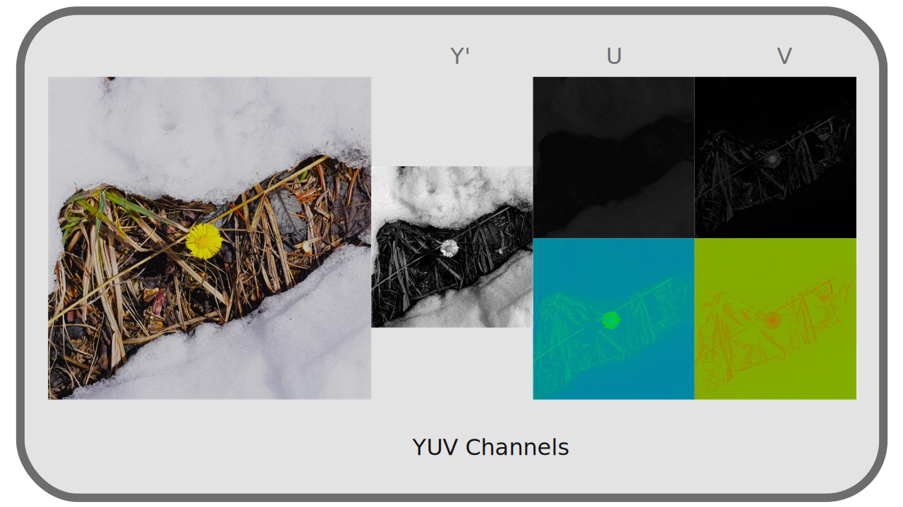
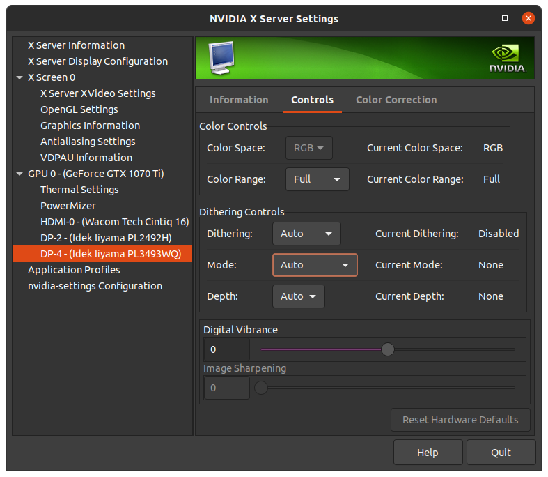

I.K - Format des pixels¶
Les espaces colorimétriques définissent la manière dont les couleurs doivent être reproduites, et quelles couleurs précises doivent être générées, mais ne définissent pas la manière dont ces couleurs sont enregistrées par l’ordinateur. C’est le format des pixels utilisé qui définira quelles sont les types de valeurs enregistrées, et de quelle manière. Ce format est complètement indépendant des espaces colorimétriques, mais influencera la qualité de l’image et la quantité de nuances qui peuvent être stockées.
Chaque pixel est composé de différentes valeurs de couleurs, ce sont les couches*, qui sont en général (mais pas nécessairement) soit rouge, verte et bleue (c’est le RGB), soit une luminance* et deux chrominances* (c’est le YUV).
Dans le cas du YUV, il y a parfois un sous-échantillonage de chrominance, qui permet de réduire la quantité de données à stocker avec une perte minime (et quasiment indiscernable) de qualité.
Enfin, pour chaque couche, on peut choisir la gamme et la précision des valeurs enregistrées.
K.1 - RGB et YUV¶
N’importe quelle couleur visible peut être représentée par seulement deux couleurs complémentaires* et primaires*. Dès trois primaires définies et fixées, en variant leurs proportions, on peut obtenir une gamme (un gamut*) plus vaste de couleurs visibles, une surface utile (et suffisante) de couleurs visibles. Ainsi, la plupart des dispositifs de reproduction des couleurs (écrans, projecteurs…) utilisent trois couleurs primaires.
Ces couleurs sont très majoritairement des rouges, verts, et bleus ; ils peuvent varier en fonction des dispositif et de l’espace colorimétrique* qu’ils utilisent mais se situent toujours dans cette gamme.
Quoiqu’il en soit, tous les systèmes de codage des couleurs utilisent un groupe de différentes valeurs correspondant à des primaires ou propriétés précises ; on parle de couches*, généralement au nombre de trois.
K.1.a - RGB¶

On utilise donc généralement en numérique une division des informations de couleurs utilisant les mêmes primaires* Rouges, Vertes et Bleues que les dispositifis de reproduction. Rouge, Vert et Bleu sont les trois canaus R, G, B de ce système.

Il y a donc plusieurs raisons à l’usage de ces primaires et de ce système de réprésentation des couleurs :
- Le choix du rouge, vert et bleu est proche de ce que les cellules rétiennes perçoivent le mieux naturellement
- Le rouge et le bleu sont les extrèmes du spectre visible, et le vert est à mi-chemin entre les deux : c’est le choix qui permet facilement d’avoir les gamut les plus larges dans l’ensemble des couleurs visibles.
- C’est donc naturellement les couleurs les plus utilisées par les dispositifs d’affichage bien qu’en théorie il serait possible d’en choisir d’autres.
Mais historiquement, et pour des raisons de performance et de stockage, un autre système est très répandu : YUV.
K.1.b - YUV¶

Lors des premières utilisations d’un signal électrique (analogique et pas numérique dans un premier temps) pour représenter des vidéos, le signal était un signal “simple” à une dimension : les vidéos étaient représentées uniquement dans une gamme allant du noir au blanc en passant par les gris, en noir et blanc. Autrement dit, on ne stockait et reproduisait que l’information d’intensité lumineuse, de luminance*.
Puis sont arrivées les télévisions couleurs, mais il a fallu garder la compatibilité du signal avec les plus anciens téléviseurs noir et blanc ; on a donc ajouté au signal de luminance1 les informations de couleurs, de chrominance, sans toucher au signal d’origine ; les anciennes télés noir et blanc ignorant simplement ces informations supplémentaires.
Le système utilisé n’est donc pas un système RGB mais de trois canaux YUV2, où Y représente la luminance, et UV représentent deux informations de chrominance (contenant respectivement le ratio bleu/vert et rouge/vert).

L’intérêt de ce système n’est pas qu’historique : comme on l’a vu précédemment, l’œil humain distingue mieux les contrastes de luminance* que de chrominance. Séparer ces informations permet de les traiter différemment, et notamment de réserver une quantité d’information, une résolution, plus élevée dans la luminance que la chrominance, et donc de réduire la quantité d’information à stocker et transmettre sans perte notable de qualité visible.
K.1.c - Comparaison¶
On a donc deux systèmes principaux de codage des couleurs, indépendants des espaces colorimétriques utilisés3.
Voici les principales différences :
- Historique : l’usage du RGB s’est répandu avec le numérique, YUV date de l’analogique
- En conséquence YUV est plus répandu dans les formats vidéos, RGB dans les formats d’images.
- YUV permet une compression des données plus efficace, moyennant une certaine perte dans la chrominance, alors que RGB doit stocker autant d’information dans ses trois canaux.
- La conversion de YUV à RGB, et inversement, se fait facilement et quasiment sans perte d’information.
K.1.d - Autres¶
Il existe d’autres combinaisons de couches et formats de pixels moins courants, pour des usages ou conteneurs* spécifiques.
Ainsi, certains format d’images utilisent une palette de couleurs au lieu de plusieurs primaires mélangées, et n’ont donc qu’une seule couche par pixel, dont la valeur correspond à une couleur prédéfinie4.
D’autres formats ne stockent que des niveaux de gris, et donc juste une couche de luminosité. Il existe aussi des formats plus exotiques à deux couches…
K.2 - YUV 4:4:4, 4:2:2, 4:2:0… Le sous-échantillonage de la chrominance¶
YUV présente l’avantage, par rapport au RGB, de pouvoir fonctionner en pratique de manière plus proche de la perception humaine qui est plus performante en luminosité*. En effet, en séparant la luminance* de la chrominance*, on va pouvoir diminuer la quantité de données enregistrée en chrominance pour favoriser la luminance, sans que nous ne percevions la perte et ainsi compresser efficacement les données vidéo.
Pour opérer cette réduction de qualité en chrominance, on en réduit simplement la résolution, le nombre de pixels ; c’est ce qu’on appelle le sous-échantillonage de chrominance (chroma sub-sampling en anglais).
Le sous-échantillonnage de chrominance est donc une méthode de compression avec pertes complètement indépendante de la norme* (codec*) d’encodage de la vidéo.
Les sigles 4:4:4, 4:2:2, 4:2:05… décrivent la manière dont le sous-échantillonnage est fait et indiquent la quantité de données perdues. Cette description est faite à partir d’une grille de 4 pixels sur 2.

La première valeur du trio représente la résolution (l’échantillonage) de la luminance*.
La deuxième valeur représente le sous-échantillonage de la chrominance* sur la première ligne (toutes les lignes impaires), tandis que la troisième représente ce sous-échantillonage sur la deuxième ligne (toutes les lignes paires).
Une quatrième valeur est parfois ajoutée au sigle et représente dans ce cas un sous-échantillonage dans la couche alpha* de la vidéo6.
On peut facilement calculer la quantité de données économisées en additionnant les trois valeurs et en divisant par 12 (ou 16 si il y a une valeur séparée pour l’alpha).
Par exemple :
- en 4:4:4, il n’y a aucune perte (facteur de
1,0) - en 4:2:2, on gagne un tiers (facteur de
0,66) - en 4:2:0, on gagne la moitié (facteur de
0,5)
Tip
En cas de vidéo noire et blanche, la chrominance est complètement inutile, on peut donc choisir le mode qui en a le moins.
K.2.a - 4:4:4¶

Le sous-échantillonage 4:4:4 en YUV est le seul équivalent au *RGB en terme de qualité (et quantité de données). Il n’y a en fait aucun sous-échantillonage dans ce mode et tous les pixels contiennent les informations de chrominance* et de luminance**.
Il n’est pas utilisé en diffusion mais seulement en production (ou pour l’archivage). En effet, le débit serait trop élevé, mais ces données sont indispensables à la post-production, en particulier dans le cas d’utilisation de fond vert ou bleu (chroma-key) : le masquage se faisant sur l’information de chrominance, il est absolument indispensable d’en avoir toute la résolution.
Warning
Malheureusement, seules les caméras et enregistreurs professionnels haut de gamme peuvent enregistrer en 4:4:4, beaucoup de caméras enregistrent en 4:2:2, voire même pour l’entrée de gamme en 4:2:0.
K.2.b - 4:2:2¶

En 4:2:2, la résolution de la chrominance* est la moitié de celle de la luminance (on diminue donc d’un tiers la quantité de données). La perte est imperceptible, ce qui en fait une manière de compresser la vidéo très efficace. Ce mode est utilisé en production (pour autant qu’il n’y ait pas d’incrustation, de fond vert/bleu), dans les formats haut de gamme et dans les diffusion de haute qualité (en télévision notamment).
La résolution horizontale de la chrominance est réduite de moitié, la résolution verticale est gardée.
K.2.c - 4:2:0¶

En 4:2:0, la résolution de la chrominance* est réduite de moitié une ligne sur deux, et complètement supprimée sur l’autre ligne. La quantité de données est donc globalement réduite de moitié, mais la différence reste très difficile à percevoir, ce qui en fait un très bon format de diffusion7.
Ce mode est majoritaire dans les fichiers informatique grand public et sur internet. Beaucoup de lecteurs logiciels, et la plupart des lecteurs hardware (lecteurs de blu-rays, smart TVs, etc) ne supportent d’ailleurs que le 4:2:0.
Il est à proscrire en production en cas de correction colorimétrique ou incrustation ; les informations de chrominance sont très insuffisantes (un effet “d’escalier” peut facilement apparaitre, dû au manque de résolution en chrominance).
La résolution horizontale ainsi que verticale de la chrominance sont toutes deux réduites de moitié.
K.3 - Profondeur de couleur (bpc)¶
Indépendamment de l’espace colorimétrique choisi, et que ce soit pour les fichiers exportés ou l’espace de travail, le paramètre de profondeur de couleur décrit la précision des valeurs enregistrées pour chaque couche* des pixels.
Contrairement à une idée répandue, la profondeur de couleur n’influence pas vraiment la quantité de couleurs visibles, mais plutôt la précision des calculs, et donc le nombre de “sous nuances” utilisables au sein de l’espace colorimétrique choisi. En d’autres mots, la profondeur ne change en rien le gamut*. Nous parlerons plutôt ici de quantité de nuances plutôt que de quantité de couleurs pour éviter cette confusion.
En définissant la précision des valeurs, et la quantité de données enregistrées, la profondeur de couleur influence directement la taille des fichiers.
On mesure généralement cette profondeur en bits* (sous entendu par pixel) ou en bpc (bits par couche). Plus on utilise de bits (0 ou 1) pour enregistrer le pixel (ou chacune des couches), plus le fichier prendra de place mais plus la précision (et donc la qualité) sera élevée.
Suivant les systèmes, les standards varient, notamment en raison du sous-échantillonage de chrominance en YUV.
K.3.a - En RGB¶
En RGB chaque couche* comporte autant d’information (il n’y a pas de sous-échantillonnage), et si en théorie on pourrait imaginer un nombre arbitraire de bits* pour stocker les couches (et c’est le cas dans certains formats de fichiers), on utilise généralement des multiples de 8 (et donc des octets entiers8).
K.3.a.a 8 bpc / 24 bits / 24 bpp / 32 bits avec alpha¶
La plupart des images utilisent 8 bits par couche. Avec 8 bits, on peut coder 28, c’est à dire 256, valeurs différentes (de 0 à 255). Avec trois couches, on a donc un total de 83, c’est à dire un peu plus de 16 millions, de valeurs différentes pour un pixel.
Cette quantité de nuances est nécessaire et suffisante pour que l’œil humain ne distingue pas de “paliers” dans les images avec un gamut* comme celui du sRGB, et est donc la plus répandue dans les images numériques RGB destinées aux écrans d’ordinateur.
Mais cette quantité n’est pas suffisante lors du travail sur l’image, comme espace de travail. En effet, au moment de modifier les images, l’ordinateur effectue des calculs sur les valeurs des différentes couches, et ces calculs sur seulement 256 valeurs entières entrainent une forte perte de précision, visible très rapidement9.
Cette profondeur n’est pas non plus suffisante pour le travail pour la télévision ou le cinéma qui utilisent une profondeur plus élevée (associée à un gamut plus large dans des espaces autres que le sRGB).
Pour pouvoir travailler sans dégrader l’image, on augmente donc la profondeur de couleur de l’espace de travail.
K.3.a.b 16 bpc / 48 bits / 48 bpp / 64 bits avec alpha¶
En ajoutant un octet pour chaque couche, on augmente grandement le nombre de nuances disponibles. En effet, on porte à 216, soit 65536, le nombre de valeurs disponibles pour chaque couche. Ce qui fait un total de 655363, soit plusieurs trillions, de nuances par pixel.
En règle générale, ces 16 bits par couche apportent la précision nécessaire pour un travail fin sur l’image, mais peuvent tout de même être insuffisants dans des cas spécifiques :
- En cas d’utilisation d’un espace de travail linéaire pour un export destiné à la télévision haut de gamme et HDR ou le cinéma (cf. chapitre L - Courbes de transefert) : le passage du linéaire* à l’espace de sortie non linéaire (l’application d’un gamma*) “compresse” les valeurs sombres et “étire” les lumières. Suite à ce calcul, 16 bpc linéaire correspond en qualité tout juste aux 12 bpc des standards les plus élevés pour la télévision10 et ceux du cinéma11.
- En cas de travail complexe et lourd, même sur un espace non linéaire, pour la télévision ou le cinéma, on peut parfois atteindre la limite de précision nécessaire pour des dégradés de couleurs très fins.
On peut donc encore augmenter la profondeur de couleur dans ces cas précis.
K.3.a.c 32 bpc / 96 bits / 96 bpp / 128 bits avec alpha¶
Warning
Ne pas confondre 32 bpc (par couche) avec 32 bits ou 32 bpp (par pixel) qui est en fait seulement 8 bpc (avec une couche alpha) !
On ajoute un troisième octet par couche, ce qui augmente encore exponentiellement le nombre de nuances disponibles, avec 232, 4 milliards, de valeurs possibles par couche*, soit un nombre qu’on considèrera infini de nuances par pixel.
Ce mode est celui qui permet un travail virtuellement sans aucune perte sur l’image, quel que soit l’espace colorimétrique utilisé, qu’il soit linéaire ou non, mais devient très lourd en terme de mémoire.
S’il peut être utile comme mode de travail, il est en fait rarement utilisé pour le stockage des fichiers (même intermédiaires) où 16 bits par couche suffisent souvent12.
K.3.b - En YUV¶
En YUV, qui n’est jamais utilisé comme système de travail mais uniquement pour le stockage et la diffusion, la profondeur utilisée est différente des systèmes RGB.
On la note en général en nombre de bits utilisés pour la couche de luminance par pixel ; en effet le nombre de bits* par couche* n’a pas vraiment de sens avec les différents sous-échantillonages de la chrominance* possibles, de même qu’un nombre de bits par pixel.
En prenant en compte le sous-échantillonage de la chrominance, on peut calculer le nombre de bits moyen utilisé par octet (et donc la taille approximative d’une image sans compression en multipliant par le nombre de pixels), même si en réalité, le nombre de bits utilisé par la chrominance est celui indiqué pour les pixels contenant de la chrominance, et zéro pour les autres.
Les différents modes ne se différencient donc qu’en terme de qualité, et en règle générale, plus on augmente la résolution l’image et le gamut* de l’espace colorimétrique, plus on augmente la profondeur pour s’assurer que les dégradés restent fins et sans effet d’escalier (“banding” en anglais).
K.3.b.a 8 bits¶
C’est la profondeur la plus répandue en informatique ; la plupart des écrans d’ordinateurs ne peuvant pas afficher plus de nuances.
- En 4:4:4, cela signifie que chaque pixel est représenté par 24 bits.
- En 4:2:2, cela signifie qu’un pixel est représenté en moyenne par 16 bits, avec en réalité la moitié des pixels (une colonne sur deux) contenant 24 bits (8 bits par couche), et l’autre moitié contenant 8 bits (8 bits de luminance et aucun de chrominance).
- En 4:2:0, cela signifie qu’un pixel est représenté en moyenne par 12 bits, avec en réalité un pixel sur quatre (une ligne sur deux et une colonne sur deux) contenant 24 bits (8 bits par couche), et le dernier quart, 8 bits (8 bits de luminance et aucun de chrominance).
C’est la profondeur standard pour les vidéos HD en Rec.709.
K.3.b.b 10 bits¶
C’est la profondeur de base des vidéos haut de gamme et UHD en Rec.2020.
- En 4:4:4, cela signifie que chaque pixel est représenté par 30 bits.
- En 4:2:2, cela signifie qu’un pixel est représenté en moyenne par 20 bits, avec en réalité la moitié des pixels (une colonne sur deux) contenant 30 bits (10 bits par couche), et l’autre moitié contenant 10 bits (10 bits de luminance et aucun de chrominance).
- En 4:2:0, cela signifie qu’un pixel est représenté en moyenne par 15 bits, avec en réalité un pixel sur quatre (une ligne sur deux et une colonne sur deux) contenant 30 bits (10 bits par couche), et le dernier quart, 10 bits (10 bits de luminance et aucun de chrominance).
K.3.b.c 12 bits¶
C’est la profondeur “HDR” des vidéos haut de gamme et UHD en Rec.2020.
- En 4:4:4, cela signifie que chaque pixel est représenté par 36 bits.
- En 4:2:2, cela signifie qu’un pixel est représenté en moyenne par 24 bits, avec en réalité la moitié des pixels (une colonne sur deux) contenant 36 bits (12 bits par couche), et l’autre moitié contenant 12 bits (12 bits de luminance et aucun de chrominance).
- En 4:2:0, cela signifie qu’un pixel est représenté en moyenne par 18 bits, avec en réalité un pixel sur quatre (une ligne sur deux et une colonne sur deux) contenant 18 bits (12 bits par couche), et le dernier quart, 12 bits (12 bits de luminance et aucun de chrominance).
K.3.c - Autres¶
Il existe d’autres profondeurs, à partir de 1 bit par pixel (les images monochromes), suivant des usages spécifiques. Par exemple, une image utilisant une palette de 256 couleurs comme on les trouve dans le format GIF ou certains PNG par exemple utilisent 8 bits par pixel (et donc par couche aussi, puisqu’il n’y a dans ce cas qu’une seule couche).
K.4 - Full range / Limited / TV / PC ?¶
Lors de l’encodage vidéo (et de son décodage), un paramètre important concerne le color range. Ce paramètre a son origine historique au moment du passage de la TV analogique aux écrans RGB numériques. Il donne une gamme de niveaux possible sur chacune des couches* de couleur (rouge, vert, bleu).
K.4.a - Full range / PC¶
Les écrans numériques des ordinateurs utilisent la gamme complète des niveaux de rouge, vert et bleu pour la reproduction des couleurs. Avec les 8 bits* par couche* les plus répandus, cela signifie que chaque couche stocke les valeurs entre 0 et 255.
0 représente donc le noir, et 255 le blanc.
K.4.b - Limited range / TV¶
Les télévisions sont elles prévues pour utiliser la gamme dite limitée des niveaux ; cette gamme est à l’origine adaptée spécifiquement pour représenter plus correctement les contrastes des films et correspond avec 8 bits* par couche* à des valeurs entre 16 et 235.
Cela signifie que en télévision, la valeur 16 représente le noir, et la valeur 235 le blanc. Toutes les valeurs inférieures à 16 sont ignorées (plus noires que noir) ainsi que toutes les valeurs supérieures à 235 (plus blanches que blanche)13.
K.4.c - Conséquence pratique¶
Il faut donc bien connaître à la fois son matériel au moment de la reproduction d’une vidéo, et bien savoir quoi faire au moment de son encodage.
K.4.c.a - Encodage¶
Dans l’immense majorité des cas, les standards vidéos préconisent un encodage en limited range / TV : les vidéos sont prévues pour être vues dans les conditions de la télévision (y compris sur internet). C’est le cas par exemple du mp4 en h.264 ou h.265, du mkv, et de tous les formats de diffusion.
En revanche, les formats d’images (PNG, Jpeg, openEXR, etc.), ainsi que les formats video intermédiaires (ceux utilisés lors de la production et non pas de la diffusion, comme le Prores), étant prévus pour un environnement informatique, utilisent plutôt le full range / PC.
Il est important de respecter ces standards pour être sûr que les fichiers soient correctement interprétés par le matériel des spectateurs, et toujours se renseigner sur les formats préconisés par les diffuseurs.
K.4.c.b - Lecture et affichage¶
Lors de la lecture des vidéos, il faut aussi que tout le système soit correctement configuré ; un problème courant (pour ne pas dire récurent) sur les ordinateurs est justement que les vidéos sont laissées en limited range alors que l’écran est full range.
Lors de la lecture, la source vidéo doit être convertie pour correspondre à l’écran ou au projecteur. Sans conversion, une vidéo limited range sur un écran full range sera “terne” : il n’y aura ni noir ni blanc, la gamme de l’image allant seulement du gris clair au gris foncé. À l’inverse, une vidéo full range sur une TV limited range aura une perte d’information aussi bien dans les lumières que les ombres, avec de grandes parties complètement noires ou blanches (l’image sera trop contrastée).

Il faut donc que le matériel soit correctement configuré. Sur un lecteur de disques ou une console, il doit y avoir un réglage pour spécifier si l’écran branché est full ou limited range (en règle générale, un écran informatique ou un vidéo-projecteur est full range, une TV limited range).
Sur un ordinateur, les choses peuvent être un peu plus complexes : il faut commencer par vérifier les paramètres du pilote de la carte graphique, en général dans une section nommée “vidéo”, et bien spécifier full range / PC (sauf si c’est une TV qui est branchée à l’ordinateur)14. Si après avoir bien réglé ce paramètre des variations sont toujours visibles, il faut vérifier que le logiciel utilisé pour lire la vidéo ne fait pas une mauvaise conversion (par exemple Quicktime sur Windows était connu pour ça15) ; la plupart de ces logiciels devraient cependant laisser faire cette conversion par la carte graphique et ne pas poser de problème (c’est le cas de VLC, du lecteur vidéo de Windows, de Totem sous Linux…).

Exemple de paramètres via les réglages d’une carte graphique Nvidia (sous Linux). Notez surtout ici le paramètres color range, à mettre sur Full si l’écran est un écran d’ordinateur, et Limited si c’est un téléviseur.
Warning
Sur certains matériels, une option “Auto” est disponible en plus de full / limited range. Dans ce cas le matériel essaye de détecter le type d’écran branché. Dans la mesure où c’est un paramètre qui ne doit changer que quand on change d’écran, il est fortement recommandé de le mettre à la main.
Sources et références
- Sous-échantillonage de la chrominance sur Wikipedia
- Color Depth sur Wikipedia (en anglais)
- RGB Full vs Limited sur Reference Home Theater (en anglais)
-
En réalité, on parle soit de luminance* soit de luminosité* ou luma* :
• La luminance a une courbe de transfert linéaire.
• La luma/luminosité (brightness en anglais) a un gamma.
Lorsqu’on parle de luminance on note YUV tandis que lorsqu’on parle de luminosité on devrait noter Y’UV, mais la plupart du temps on ommet le prime.
cf. chapitre L - Courbes de transfert, espace linéaire et gamma. ↩ -
Le terme général YUV recouvre en réalité deux familles, chacune déclinées en luminance ou luminosité (Y ou Y’) :
• En analogique on parle de YUV et Y’UV, ou parfois YPbPr et Y’PbPr.
• En numérique le terme exact est YCbCr ou Y’CbCr, et parfois YCC.
Mais c’est généralement le terme YUV qui est utilisé dans tous ces différents cas… ↩ -
En fait, on peut utiliser indifféremment YUV et RGB, mais certains standards et espaces colorimétriques préconnisent plutôt l’un ou l’autre, ou les deux. Par exemple sRGB est spécifiquement prévu pour être utilisé sur un encodage RGB, alors que Rec.709 spécifie qu’il peut servir aussi bien en RGB que YUV. ↩
-
C’est le cas du GIF qui contient au maximum 256 couleurs différentes dans sa palette. On peut aussi utiliser ce principe sur le PNG et d’autres formats. L’intérêt est de réduire globalement la taille du fichier en stockant moins d’information (uniquement la palette avec les couleurs décrites en RGB, et une seule couche par pixel ; on réduit donc globalement la taille par un facteur trois). ↩
-
Cette liste sont les sous-échantillonages les plus courants, mais il y en a de plus rares (4:2:1, 4:1:1), ou plus complexes ou carrément exotiques (3:1.5:1.5, 3:1:1)… ↩
-
À défaut, le sous-échantillonage du canal alpha est le même que celui de la luminance*. ↩
-
Ce mode existe dans le format openEXR : c’est l’option notée “Luminance/Chroma”. ↩
-
En informatique courante où l’octet* est aussi le Byte*, l’unité la plus petite de mémoire, on ne peut pas utiliser de “demi octet” (ou toute autre fraction). Utiliser un nombre entier d’octets (de Bytes) par pixel fait que le nombre de pixels dans l’image peut être complètement arbitraire ; si le nombre d’octets par pixel n’est pas entier, plusieurs pixels devront partager des octets, et le nombre de pixels est contraint : le nombre total d’octets de l’image doit être entier. C’est pour cette raison que le nombre de lignes et colonnes d’une vidéo mp4 doit être pair par exemple. ↩
-
On s’en rend compte très facilement : imaginons que le calcul à faire est une division par deux d’une valeur de
127. Le résultat sera arrondi à63ou64. Si d’autres calculs suivent, à force d’arrondir la précision tombe très rapidement et la qualité avec. ↩ -
En 2021, le standard pour la Ultra-Haute Définition (4K) Rec.2020, encore peu utilisé en diffusion mais déjà standardisé, qui possède un gamut très large, préconise 12 bits en luminance pour son mode “HDR”. ↩
-
Le Digital Cinema Package (DCP) (où l’image est en fait encodée sous la norme JPEG 2000 sans perte) en usage en 2021 code les couleurs dans un espace XYZ avec 12 bpc. ↩
-
On ne rentrera pas ici dans le détail technique de la manière dont ces valeurs sont représentées, soit par un nombre à virgule flottante (entre 0,0 et 1,0 et potentiellement négatif aussi) soit par un nombre entier, mais il faut savoir que cette distinction existe autant pour le 16 bpc que le 32 bpc. Dans le doute, préférez les nombre à virgule flottante (“float” en anglais). ↩
-
Certains blu-rays et consoles de jeux tirent parti de cette limite pour ajouter des spéculaires (brillances) au delà du blanc et les rendre plus lumineux. Si la TV est compatible, elle affichera des “super blancs”, sinon elle ignorera simplement cette information, sans que l’image n’en soit affectée. ↩
-
Pendant longtemps, les pilotes des cartes graphiques NVidia sous Windows étaient configurées pour afficher les vidéos en limited range par défaut… ↩
-
Bien qu’aimé des animateurs pour sa capacité à facilement lire les vidéos image par image, Quicktime sous Windows est à proscrire pour sa mauvaise gestion des couleurs ; son développement a de toute façon été abandonné par Apple.
DJV, disponible aussi bien sous Windows, Mac OS, Linux, que BSD, le remplace efficacement et intègre une gestion des couleurs professionnelle. ↩